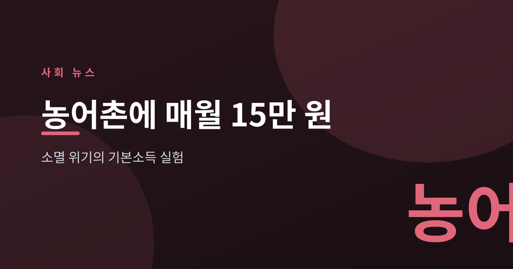
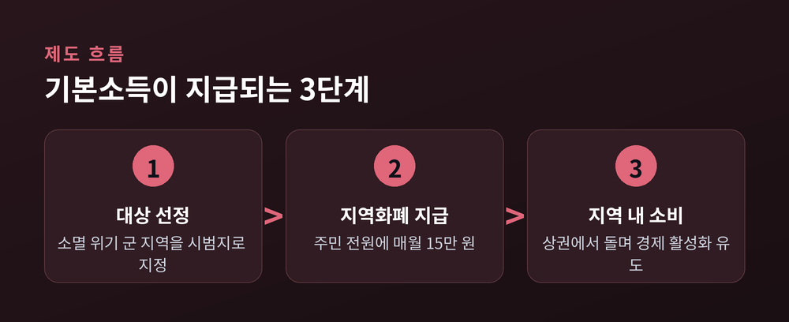
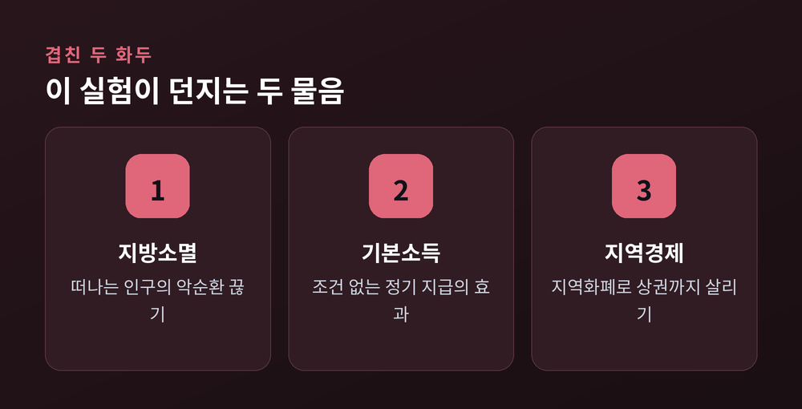
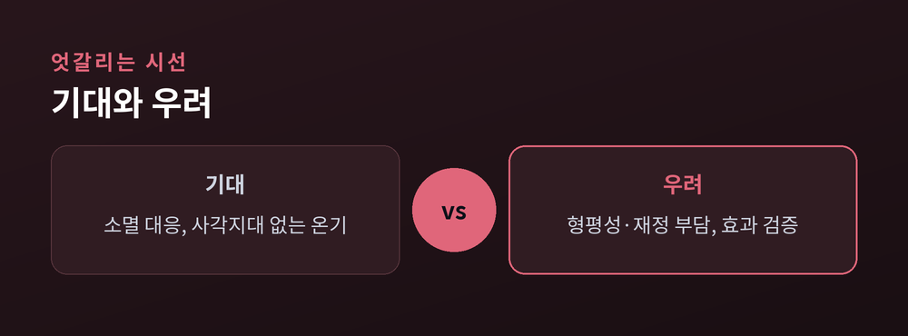

소멸 위기의 실험과 남은 논쟁

이번 글에서는 최근 첫 지급이 시작된 '농어촌 기본소득' 시범사업을 정리해 보겠습니다. 소멸 위기에 놓인 군 지역 주민에게 조건 없이 매월 15만 원을 지역화폐로 주는 실험입니다. 무슨 일이 벌어지고 있는지, 왜 중요한지, 어디로 향할지를 차분히 짚어 보려 합니다.
농어촌 기본소득은 읍·면에 사는 주민 모두에게 소득이나 재산, 나이를 따지지 않고 매월 일정액을 주는 제도입니다. 지급액은 1인당 월 15만 원이며, 현금이 아니라 지역사랑상품권으로 지급됩니다.
정부는 2026년 2월 말 소멸 위기 군 지역에서 첫 지급을 시작했습니다. 시범기간은 2026년부터 2027년까지 2년입니다. 이어 추가로 선정된 강원 화천, 충북 보은, 전북 진안·무주, 전남 구례·보성, 경북 청송 등 7개 군은 8월부터 지급을 받습니다.
돈을 지역화폐로 주는 데에는 뜻이 있습니다. 받은 돈이 그 지역 안에서 돌게 해 상권까지 함께 살리려는 설계입니다.

이 실험에는 두 개의 큰 물음이 포개져 있습니다.
하나는 지방소멸입니다. 많은 군 지역이 인구감소로 소멸위험지역으로 분류돼 있습니다. 사람이 떠나면 가게가 닫고, 가게가 닫으면 다시 사람이 떠납니다. 그 악순환을 끊어 보려는 시도입니다.
다른 하나는 기본소득입니다. 조건을 걸지 않고 정기적으로 돈을 주면 지역과 사람이 어떻게 달라지는가. 그동안 이론으로 오가던 질문을 지역 단위에서 처음으로 크게 실험하는 무대인 셈입니다.

같은 정책을 두고 셈법은 갈립니다.
기대하는 쪽은 소멸에 맞선 적극적 대응이라고 봅니다. 조건을 따지지 않으니 사각지대 없이 온기가 돌고, 지역화폐가 면 단위 상권을 데운다는 것입니다. 열악한 정주여건을 고려하면 이 정도 차등 지원은 정당하다고 말합니다.
우려하는 쪽은 형평성과 재정을 이야기합니다. 탈락한 지역에서는 "우리가 더 열악한데 왜 빠졌느냐"는 반발이 나왔습니다. 지역 안에서도, 상권이 부족한 면 주민은 정작 쓸 곳이 마땅치 않아 읍 주민보다 사용률이 낮다는 지적이 있습니다. 전국으로 넓히면 연 5조 원 안팎이 든다는 추산도 나옵니다. 일각에서는 선거를 겨냥한 선심성 정책이라며 효과 검증을 요구합니다.
예전엔 농어촌 지원이 시설을 짓거나 사업비를 대는 방식이었습니다. 지금은 주민에게 직접 돈을 쥐여 주는 방식입니다. 방법이 바뀐 만큼 평가의 잣대도 새로 필요합니다.

당장 전국으로 확대되지는 않습니다. 이번은 어디까지나 2년짜리 시범입니다.
관건은 검증입니다. 정말 인구가 유입되는지, 지역 소비가 살아나는지, 정주여건이 나아지는지가 2년 뒤 확대 여부를 가릅니다. 사용처와 사용기한을 어떻게 손보아 면 지역 사용성을 높이느냐도 형평성 논란의 실질적 열쇠입니다.
물론 한계도 분명합니다. 매월 15만 원이 떠난 사람을 다시 불러올지, 남은 사람을 붙잡을지는 아직 아무도 단언하지 못합니다. 돈을 주는 일과 마을을 되살리는 일은 같지 않습니다.
정리하면 이렇습니다. 농어촌 기본소득은 소멸이라는 오래된 문제에 던진 새로운 방식의 답입니다. 다만 그 답이 맞는지는 지금부터 2년이 말해 줄 것입니다.
— 돈이 도는 것과 사람이 돌아오는 것은, 같은 듯 다른 이야기입니다.
이 실험이 어떤 숫자를 남길지, 조용히 지켜볼 만합니다.
참고 출처: 대한민국 정책브리핑, 헤럴드경제, 서울신문, 경향신문, 경북일보, 문화일보